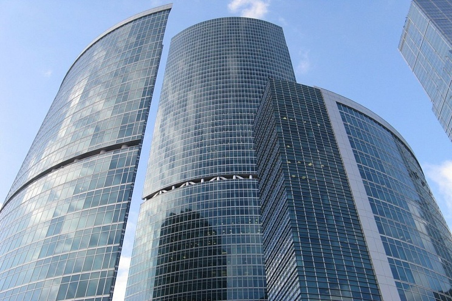

Башня на набережной
Единственный комплекс Москва-Сити в стиле хай-тек

Характеристики
- Высота (башня С):268 м
- Высота (башня В):127 м
- Высота (башня А):85 м
- Годы строительства:2003-2007
- Девелопер:ENKA
- Застройщик:ENKA
- Общая площадь:254 000 м²
- Скорость лифтов:7 м/с
- Этажей (башня С):59
- Этажей (башня В):27
- Этажей (башня А):17
- Подземных этажей:5
- Апартаменты:нет
- Участок:10
Архитектура и особенности
Почти все сооружения в Москва-Сити выполнены в архитектурном стиле деконструктивизм, и лишь комплекс «Башня на набережной» выполнен в стиле хай-тек. Изюминкой комплекса являются техэтажи в башне «В» и башне «С», которые не имеют остекления снаружи зданий. Они создают оптический обман — с первого взгляда кажется, что они делают здания хрупкими, но на самом деле они, наоборот, делают здания прочными.
🏢 Башня «А»
Представлена самым маленьким небоскребом на 17 этажей (высота 85 метров), строительство которого началось в 2003 году. Сооружение открыло свои двери для съемщиков в середине октября 2005 года.
🏢 Башня «В»
Представлена небоскребом с панорамными тонированными стеклами и высотой 127 метров (27 этажей). Это среднее по величине здание из комплекса, на территории которого находятся элитные рестораны, развлекательные центры и офисы известных компаний.
🏢 Башня «С»
Здание возвышается на 268 метров над землей и состоит из 59 этажей. При этом сооружение также имеет подземную часть, которая уходит вниз на 5 этажей.
Как добраться
📍 Адрес: Пресненская набережная, 10, Москва
🚇 Метро: Выставочная, Международная, Деловой центр